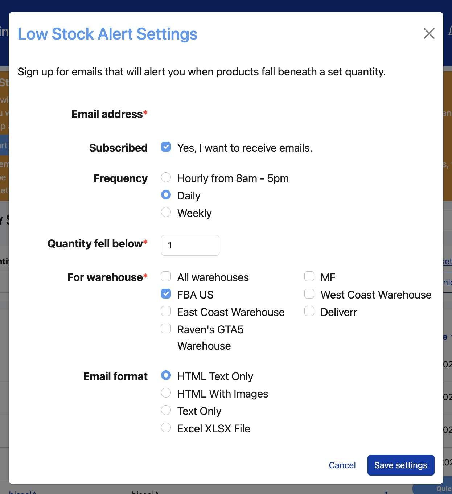
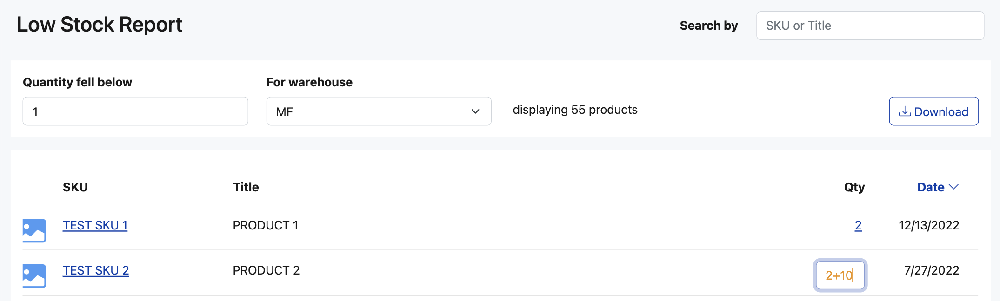

The Low Stock Report allows you to quickly view which items have recently fallen below a certain inventory threshold.
It is located in the Reports header in the navigation. If you are a current user of Listing Mirror, you can view it by going here.
Quantity fell below is the threshold you are setting. If you would like to see all items that are at 0 quantity stock, then you would set this number to 1 (which it is by default). If you would like to see all items that are below 5 quantity stock, you can update this number to 5.
For warehouse is the location where you want to view your low stock. By default, it is set to your Merchant Fulfilled warehouse so you can instantly see what items are running low in your personal warehouse. However, all of your different warehouses (inventory sources) are available as selections. We also offer an All Warehouses option. This combines all of your individual warehouse quantities into one Total Stock amount and is helpful if you want to know what items are running low overall.
In the table, we will display all products that fall below your inventory threshold for the warehouse you have selected. By default, the results are sorted by the date in which that product fell below the threshold, with the most recent dates first. This means you can check back daily to see which items have recently fell low and need restocked, while not worrying about retired listings.
If you wish to sort by a different column instead, you can simply click the header and the sort will occur.
If you would like to export this information (either to send off to a colleague or to have for future use), you can do so by clicking the Download button and a .csv file will automatically save to your computer.
You can receive email alerts to stay on top of your inventory that has fallen below your optimal stock.
If you are not currently signed up for alerts, you will see a link that says 'Sign up for email alerts'. Click that and select your preferences.
If you are currently receiving email alerts, you will see a link that says 'Edit email alert settings'. Click that to update your preferences.

You will then receive an email to your email address on file at your scheduled frequency for the warehouses you selected. Any item that has fallen below the quantity that you input since your last scheduled email will appear in the report that you receive.
You can turn these off at any time by unselected the 'Yes, I want to receive emails.' option in the settings modal.
While looking at the Low Stock Report, you notice a product that you know you have in stock and want to keep up on the marketplace. You can add that inventory directly from the report, instead of having to navigate to a new page. Simply click on the qty and then update it using one of these three options:
1. Replace the number with the quantity you know you have on hand.
2. Increase the quantity by entering '+'. For example, if the report shows 2 and you have 3 more, you can enter '2+3' and it will automatically calculate and display 5.
3. Decrease the quantity by entering '-'. For example, if the report shows 2 and you want to pull those last 2 for your stock, you can enter '2-2' and it will automatically calculate and display 0.

Why doesn't my product have a date attached?
The date we display is the most recent date where your item shifted below your set quantity threshold. If the quantity has always been below that threshold, then there will be no date to display. For example, if you have "Quantity fell below" to 30 and a product has always had 25 quantity, then it will show in the report but with no date.
How many SKUs are supported in this report?
We currently have a 20k limit for this report.
It seems like some of my 0 quantity items are missing?
If an item is at 0 quantity, and has always been at 0 quantity, then we will not display it in this report. This is to save our clients from having to dig through lots of dead listings when trying to determine what needs to be restocked.